Attendance <<
Previous Next >> stl
HW1
Homework 1 (10%):
利用 Solvespace 與 NX2312 建立 Parts 頁面中的零件
其他零件模擬練習
利用 Solvespace 繪製列表中零件的操作過程與說明影片如下:
影片標題: 國立虎尾科技大學機械設計工程系電腦輔助設計與實習- 作業一之一
所完成的零件檔案下載
09/27練習題(1)
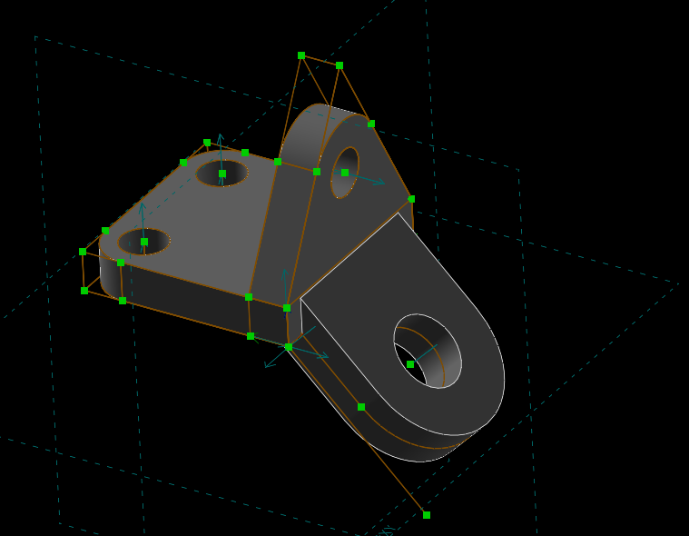
https://youtu.be/Tf7pHJ3wnic
零件檔(1)
stl檔(1)
10/11練習題(2)
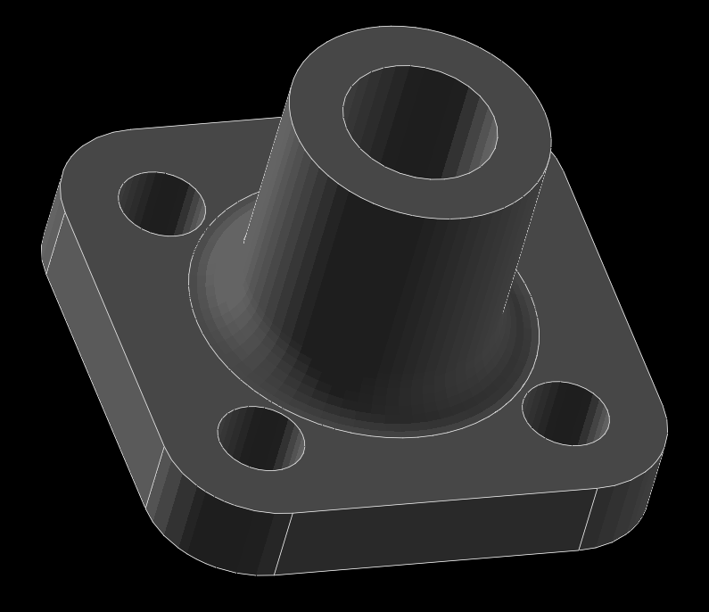
https://youtu.be/wzjw2MVq41A
零件檔(3)
st檔(3))
10/18練習題(3)

https://youtu.be/LcgsOH8u51k
零件檔(2)
stl檔(2)
10/25練習題(4)
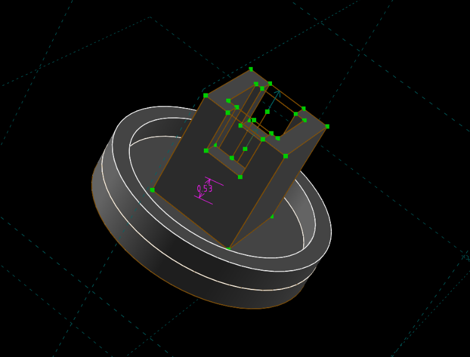
https://youtu.be/HS_qufBXCyo
零件檔(4)
stl檔(4)
11/06練習題(5)

https://youtu.be/OAy4KFnV-P8
零件檔(5)
stl檔(5)
練習題(6)
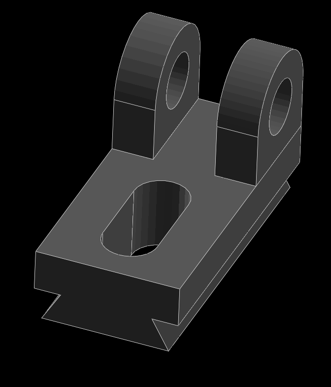
https://youtu.be/VsUjF9FicgM
零件檔(6)
stl檔(6)
練習題(7)
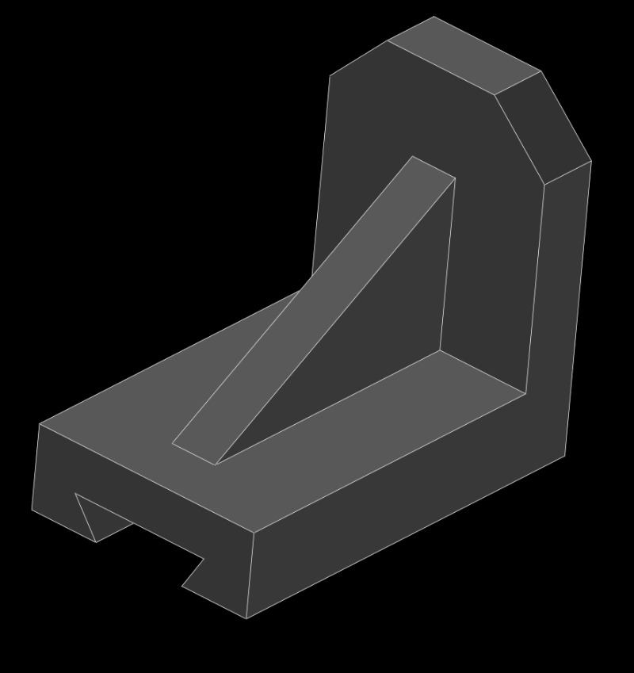
https://youtu.be/qkxiw_FbXXE
零件檔(7)
stl檔(7)
練習題(8)
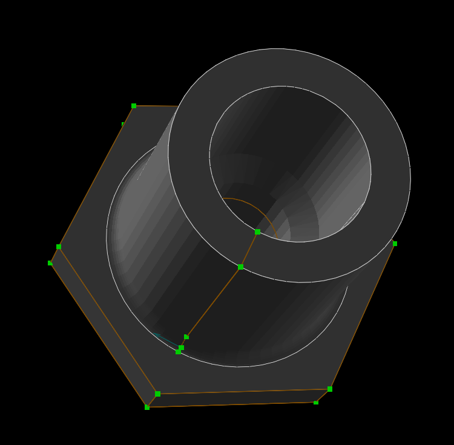
https://youtu.be/O4gnj29wLaQ
零件檔(8)
stl檔(8)
練習題(9)
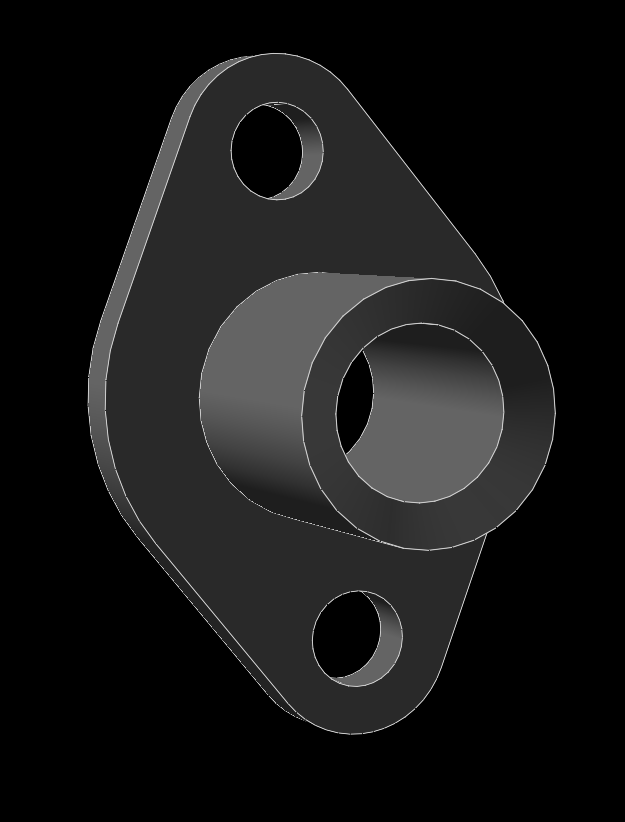
https://youtu.be/oRDoeGiG9gI
零件檔(9)
stl檔(9)
練習題(10)
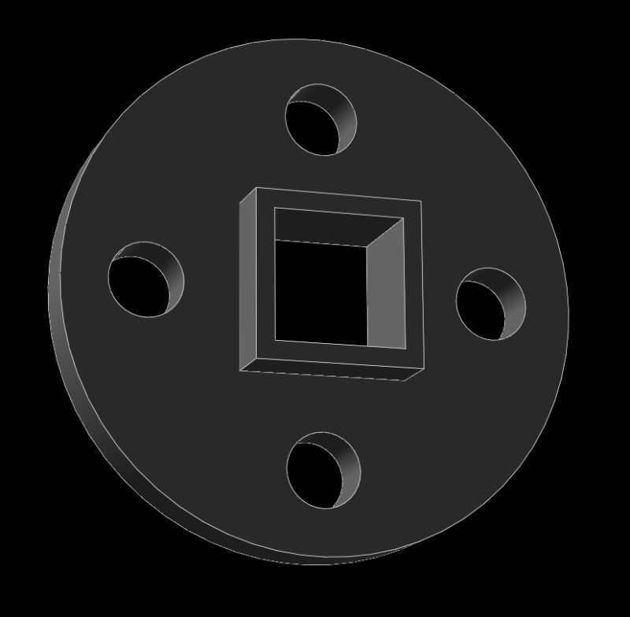
https://youtu.be/9il9VU-Jww4
零件檔(10)
stl檔(10)
練習題(11)
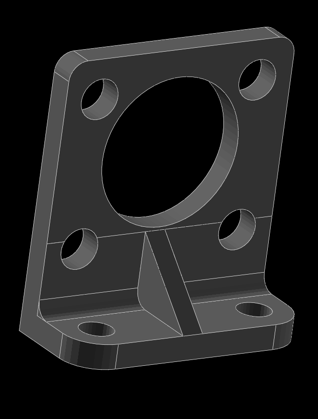
https://youtu.be/Yp1LrWOV02k
零件檔(11)
stl檔(11)
練習題(12)
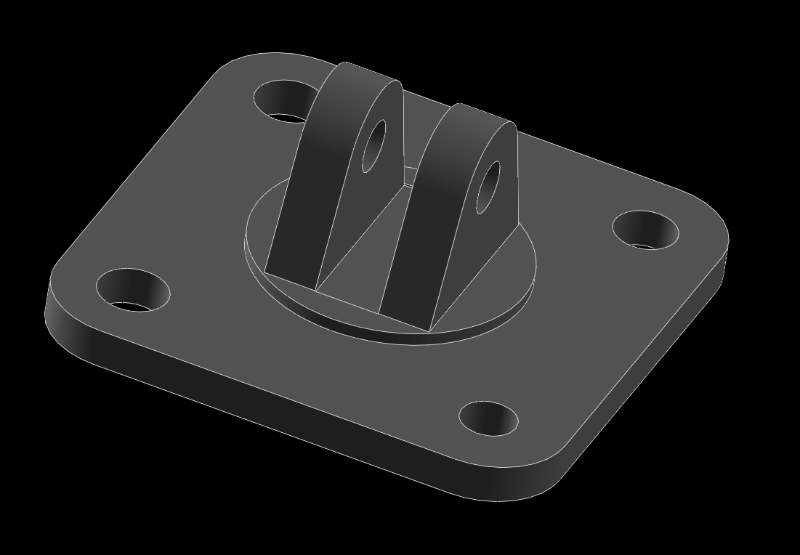
https://youtu.be/IWjonHwtDWc
零件檔(12)
stl檔(12)
練習題(13)
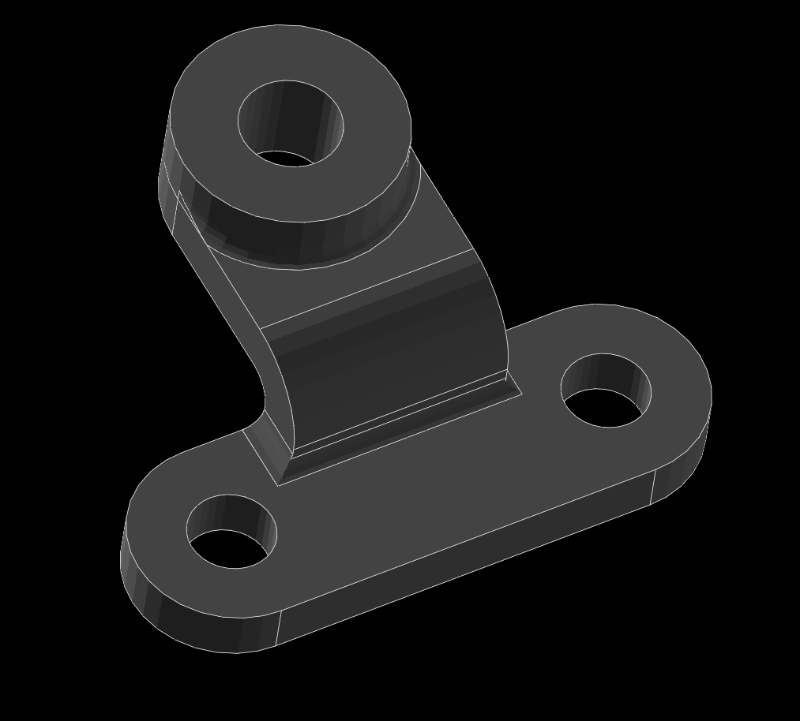
https://youtu.be/LjWUPp1RptQ
零件檔(13)
stl檔(13)
影片標題: 國立虎尾科技大學機械設計工程系電腦輔助設計與實習- 作業一之二
所完成的零件檔案下載\
利用 NX2312 繪製列表中零件的操作過程與說明影片如下:
影片標題: 國立虎尾科技大學機械設計工程系電腦輔助設計與實習- 作業一之三
所完成的零件檔案下載
影片標題: 國立虎尾科技大學機械設計工程系電腦輔助設計與實習- 作業一之四
所完成的零件檔案下載
......
HW1 執行心得:
這次是學生我第一次使用solvespace這個軟體，一開始在操作方面有點不太適應，在畫圖時常會按錯指令導致檔案損毀或錯誤，之後請教了其他同學和自己的摸索下逐漸熟悉了這個程式的操作方式，才能夠完成了此次的作業檔案。
HW1 自評分數:
完成上述流程後, 請將 HW1 自評分數輸入 cad2024 自評表單中.
作業區
用share x截圖
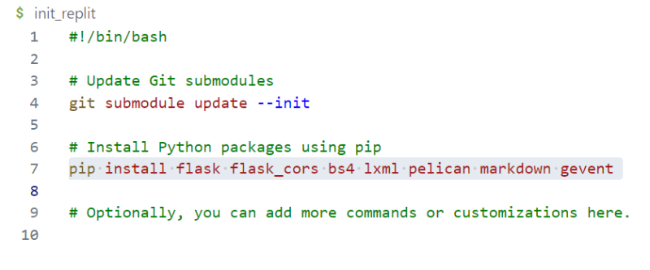
Attendance <<
Previous Next >> stl